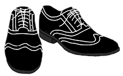
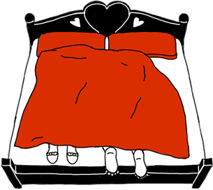
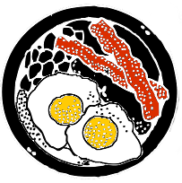

Oblečení
Udělalo by nám velkou radost, kdybyste vy, svatebčané, mohli alespoň částečně přizpůsobit své oblečení tomuto pro nás významnému dni.
Svatba bude laděna do levandulova (světle fialová). Bylo by milé, pokud byste svým oblečením nebo alespoň doplňky s touto barvou ladili.
Dámy si většinou poradí, pro pány doporučujeme košili nebo kratavu.
Dámy prosíme, aby vynechaly šaty podobné svatebním, zejména bílé.

Květiny a dorty
Květiny jsou hezkým darem, ale s ohledem na množství ostatních květin ve výzdobě a naším plánovaným odchodem na svatební cestu, bysme si je ani nemohli užít. Proto je prosíme nenoste.
Také vás prosíme abyste nenosili žádné další zákusky, koláče nebo dorty. Všeho bude na svatbě dost.
Redový tanec
V některých krajích koncept zcela cizí, ale na Slovensku tradiční. Na východním Slovensku se jedná se o typický půlnoční tanec s nevěstou.
Nevěsta se převleče ze svatebních šatů a po zahájení tradiční hudby budou mít přítomní pánové, páry i celé rodiny jedinečnou možnost si zatančit s nevěstou. Případní zájemci však nejdříve vloží příspěvek pro novomanžele do připraveného klobouku. Na upomínku pak obdrží malý dárek.
Cesta z Brna
Cestujícím z Brna doporučujeme použít jižní trasu (Brno – Bratislava – Nitra – Zvolen – Lučenec – Rimavská Sobota – Rožňava – Košice). Tato cesta bez dlouhých zastávek trvá kolem 6 hodin. Pokud vyrazíte v 5:30 ráno, měli byste vše stihnout s dostatečnou časovou rezervou.
Pokud přijedete již v pátek, můžete využít některý z penzionů přímo v Košicích. Dřívější ubytování v hotelu Dam není možné, protože tam v pátek probíhá jiná svatba.
Capsule na momentky
V pravém horním rohu stránky naleznete odkaz na aplikaci pro váš mobilní telefon. Tato aplikace
se vám bude na svatbě velmi hodit. Můžete pak s námi sdílet zajímavé momentky, které
večer vyfotíte. Budete se také moci zůčastnit zajímavé foto soutěže .
Ubytování
Pro svatebčany z blízka i z dálky zajišťujeme ubytování přímo v hotelu Dam. Ubytování bude možné od 12:00. Po probdělé noci bude připravena snídaně. Pokoje pak bude nutné opustit do 12:00 následujícího dne.

Obyčeje
Únos nevěsty, chomout, koule na noze a podobné "zvyky" se mohou zprvu jevit jako dobrý nápad, ale negativně naruší celý průběh svatebního dne způsobem, který bychom si nepřáli. Proto je prosíme vynechejte.
Svatební dary
S ohledem na plánovanou výstavbu uvítáme jakýkoliv finanční příspěvek na stavební materiál. Jeho orientační ceny můžete vidět v tabulce níže. Každého, kdo přispěje pak rádi pozveme na kafíčko do našeho nového domečku. Koupě vázičky a bytových doplňků by byla nevhodná, neboť si ještě ani sami nejsme jisti vnitřním uspořádáním a stylem našeho nového bydlení. Nehledě na fakt, že bychom takové předměty neměli kam dát, protože ten domeček ještě nemáme .
- Pivo pro dělníka: €1 / ks
- Cihla izolační: €30 / m2
- Beton: €50 / m3
- Plastové okno na WC: €100
- Kuchyňská linka: €300 / m
- Vchodové dveře: €1000
- Soukromé letadlo: €300 000 Jak se to sem dostalo?
Oběd
Předpokládaný začátek hostiny je v 16:00. I když bude před obřadem zajištěno drobné občerstvení, doporučujeme se ještě zlehka naobědvat.
